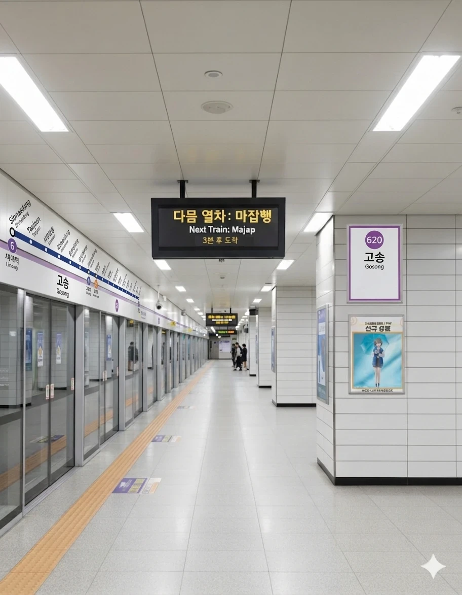

1. 개요
효빈 도시철도 6호선 620번. 효빈광역시 북구 고송동 11-22 지하에 소재한 철도역이다. 2004년 효빈광역시청 이전 이후 폭발적으로 성장한 고송신도시(고송동 신시가지)의 심장부이자, 효빈 도시철도 비환승역 승하차량 압도적 1위를 자랑하는 명실상부한 6호선의 수요 깡패 역이다.
2. 역 정보
고송대로를 따라 신시가지의 정중앙 중심부를 완벽하게 관통하는 위치에 자리 잡고 있다. 주변에 대단지 브랜드 아파트(고송역 자이, 고송역 푸르지오, 고송이편한세상 1차, 고송영무예다음 등)와 기하학적 광기의 결정체인 스퀘어시티(고송스퀘어아파트), 그리고 고송아파트 1차·4차 등 매머드급 주거 단지가 병풍처럼 둘러싸고 있다.
여기에 더해 금융기관, 메가박스, 워터파크 겸 복합 휴양시설인 효빈 아쿠아파크, 서브컬처 전문 라이브 공연장인 애니플러스 스테이지 고송 등 대형 상업·문화시설과 효빈광역시 여성가족회관, 고송도서관 등 공공·복지 인프라까지 빈틈없이 밀집해 있어 출퇴근 시간은 물론 평시와 주말에도 엄청난 이용객을 자랑한다. 사실상 효빈광역시 제1부도심의 역할을 톡톡히 해내며 원도심 중앙로에 버금가는 거대 상권을 배후에 두고 있다.
2.1. 역명 유래 및 역사
놀랍게도 현재의 고송역은 효빈 도시철도 역사상 두 번째로 '고송'이라는 이름을 쓰는 역이다. 1989년 2호선 개통 당시, 현재의 시청역(2호선, 6호선 환승역, 향후 창전선 개통 예정) 자리가 본래 '고송역'이라는 이름으로 개업했었다. 그러나 2004년 효빈광역시청이 중구 중보로에서 바로 이 역 앞으로 이전해 오면서 역명이 자연스럽게 '시청역'으로 바뀌었고, '고송'이라는 역명은 한동안 노선도에서 사라져 결번 처리된 것과 다름없는 상태였다.
이후 2016년 4월 3일 6호선이 개통되면서(참고로 6호선 시청역 구간은 강물 유입 사고 등 난공사로 인해 몇 달 뒤인 2016년 9월 21일에 완공되었다), 기존의 구(舊) 고송역(현 시청역)과는 꽤 거리가 떨어진 고송동 신시가지 한복판에 새로운 역이 신설되었다. 이 역이 고송신도시 상권과 주거지의 진정한 중심지 역할을 하게 되면서, 지역 주민들의 강력한 요구에 따라 과거의 이름을 물려받아 현재의 고송역(2대)으로 명명되었다. 이름이 화려하게 예토전생했다
3. 역 주변 정보
3.1. 출구 정보
고송신도시의 핵심 교차로인 만큼 총 6개의 출구가 사방의 아파트 단지(고송2·3·4·5·6동 경계)와 상업지구, 공공시설로 촘촘하게 뻗어 있다.
 고송역 출구 정보
고송역 출구 정보
|
||
|---|---|---|
| 번호 | 주요 시설 및 방향 | 비고 |
| 1 | 고송역 푸르지오 (북구 고송4동), 고송영무예다음 아파트 (북구 고송4동·2동), 고송아파트 4차(고송4단지) (북구 고송4동), 고송2지구대 (경찰) | 고송4동·2동 방면 |
| 2 | 고송4동 행정복지센터, 고송도서관 (북구청 산하 / 북구 고송동 232-1), 스퀘어시티(고송스퀘어아파트) (북구 고송5동·2동) | 행정·도서관·기하학 아파트 |
| 3 | 고송역 자이 아파트 (북구 고송4동), 고송신도시우편취급국, 애니플러스 스테이지 고송, 메가박스 고송점, 북효빈농협 고송역점, 수협은행 고송지점 | 중심 상업시설·서브컬처 밀집 |
| 4 | 고송초등학교, 고송중학교, 효빈북중학교, 고송이편한세상 1차 아파트 (북구 고송3동·4동) | 고송3동·4동 학군 지역 |
| 5 | 효빈광역시 여성가족회관 (북구 고송동 150), 북구 제2청소년상담복지센터 (북구 고송동) | 공공·여성·청소년 복지타운 |
| 6 | 효빈 아쿠아파크, 고송아파트 1차(고송1단지) (북구 고송6동) | 체육·휴양 및 고송6동 방면 |
3.2. 주요 시설 및 아파트 단지 상세
고송역 역세권은 고송2동, 고송3동, 고송4동, 고송5동, 고송6동의 경계가 맞물리는 거대한 결절점으로, 공공기관부터 서브컬처 성지, 기하학적 아파트까지 효빈시 특유의 개성이 총집합해 있다.
3.2.1. 공공·치안·우정·도서관 및 복지 시설
- 고송2지구대 (1번 출구): 효빈고송경찰서 산하 핵심 지구대. 비환승역 이용객 1위인 고송역 일대의 거대한 유동인구와 상권 치안을 책임진다. 주말마다 애니플러스 스테이지 고송 관람객이나 성지순례객들이 분실물 신고를 하러 많이 찾아오는데, 지구대 경찰관들이 "네소베리 인형 분실이요? 무슨 캐릭터죠?"라며 자연스럽게 묻는 수준에 도달했다고 한다(...).
- 고송신도시우편취급국 (3번 출구): 효빈덕북지방우정청 북효빈우체국 관할 우편취급국. 3번 출구 상업지구 한복판에 위치해 있는데, 인근 애니플러스 스테이지 고송이나 굿즈샵에서 현장 구매·교환한 굿즈를 전국으로 택배 발송하려는 덕후들로 인해 하루 종일 우체국 박스 포장 테이프 뜯는 소리가 끊이지 않는 곳이다.
직원이 포토카드 안 구겨지게 뽁뽁이 감는 속도가 달인급이다 - 고송도서관 (2번 출구 / 북구 고송동 232-1): 북구청 산하 구립 공공도서관. 시청역 앞의 효빈시청한바다도서관(시청 직영)이나 효빈만화애니메이션도서관과 함께 북구 평생학습의 축을 담당한다. 특히 고송신도시 대단지 아파트의 엄청난 학구열을 그대로 흡수하여 시험 기간만 되면 고송초·고송중·효빈북중 학생들과 수험생들로 열람실 자리 전쟁이 벌어진다.
- 효빈광역시 여성가족회관 (5번 출구 / 북구 고송동 150): 효빈시 여성·가족 정책 및 평생교육, 문화 강좌, 창업 지원 등을 총괄하는 대규모 복합 공공시설. 요리, 제과제빵, 외국어(특히 JLPT 일본어 강좌가 늘 조기 마감된다), 공예 등 시민 대상 프로그램이 알차게 운영되어 주부들과 직장인들의 발길이 끊이지 않는다.
- 북구 제2청소년상담복지센터 (5번 출구 / 북구 고송동): 여성가족회관 인근에 나란히 위치한 청소년 특화 복지·심리상담 기관. 고송신도시의 방대한 학령인구(청소년)를 케어하기 위해 제1센터만으로는 부족해 신설되었다. 진로 상담 및 심리 치유 프로그램이 매우 잘 되어 있으며, 상담실 한구석에 청소년들의 마음의 문을 열기 위한 각종 서브컬처 굿즈와 보드게임이 구비되어 있다는 후문이 있다.
3.2.2. 문화·체육·휴양 시설
- 애니플러스 스테이지 고송 (3번 출구): 3번 출구 역세권 상업지구에 자리 잡은 서브컬처 특화 라이브 홀 및 복합 문화 공연장. 인근 애니플러스샵 및 콜라보 카페와 연계되어 성우 내한 팬미팅, 인디 및 서브컬처 밴드 라이브, DJ 이벤트(애니송 클럽 이벤트), HAF(효빈 애니메이션 페스티벌) 전야제 등이 연중무휴로 열린다. 특히 고송동의 주인(?)인 타카마츠 토모리(MyGO!!!!!) 관련 상영회나 밴드 커버 라이브가 열릴 때면 3번 출구 계단까지 응원봉(블레이드)을 든 오타쿠들의 대기열이 끝없이 이어진다.
- 효빈 아쿠아파크 (6번 출구): 6번 출구 바로 앞에 위치한 도심형 대형 실내외 워터파크 및 찜질·스파 복합 휴양 단지. 사계절 온수풀과 유수풀, 대형 슬라이드를 갖추고 있어 가족 단위 방문객은 물론, 애니플러스 스테이지 고송에서 밤샘 라이브를 뛰고 땀에 쩔은 원정 덕후들이 찜질방에서 피로를 풀고 가는 필수 코스로도 각광받는다.
3.2.3. 대규모 아파트 단지 (주거 지구)
고송역 일대는 법정동은 모두 고송동 단일 동이지만, 워낙 인구가 많아 행정동이 고송1동~8동으로 세밀하게 쪼개져 있다. 심지어 대단지 아파트의 경우 단지 내부로 행정동 경계선이 지나가 한 아파트가 두 개의 행정동에 걸쳐 있는 기현상도 흔하다.
- 스퀘어시티(고송스퀘어아파트) (2번 출구 / 북구 고송5동·2동 [고송동]): 향토 건설사 산곡건설 정태수 회장의 '기하학적 광기 3부작'(펜타곤시티 - 포아이즈 - 스퀘어시티)의 대미를 장식한 2018년 준공 궁극의 정육면체(큐브) 아파트. 멀리서 보면 거대한 깍두기나 마인크래프트 블록, 혹은 보그 큐브(Borg Cube)가 땅에 박혀 있는 듯한 압도적 위용을 자랑한다. 단지가 어찌나 거대하고 네모반듯한지 북구 고송5동과 고송2동에 걸쳐 있다.
자와 각도기 없이는 도면도 못 본다는 전설의 깍두기 요새 - 고송역 자이 (3번 출구 / 북구 고송4동 [고송동]): 3번 출구 상업지구를 바로 코앞에 끼고 있는 고송4동의 대장주 아파트 중 하나. 초역세권과 슬세권(메가박스, 농협, 수협, 우편취급국 등)을 동시에 누리는 핵심 단지다.
- 고송역 푸르지오 (1번 출구 / 북구 고송4동 [고송동]): 1번 출구와 바로 맞닿아 있는 고송4동 핵심 브랜드 단지. 고송2지구대가 바로 옆에 있어 밤길 치안이 효빈시 최고 수준이라 불리는 안심 단지다.
- 고송영무예다음 (1번 출구 / 북구 고송4동·2동 [고송동]): 푸르지오 인근에 위치한 대단지로, 단지 부지가 넓어 행정구역상 고송4동과 고송2동에 나란히 걸쳐 있다. 같은 아파트인데 몇 동에 사느냐에 따라 행정복지센터와 투표소가 갈리는 곳.
- 고송이편한세상 1차 (4번 출구 / 북구 고송3동·4동 [고송동]): 4번 출구 방면 고송초·고송중·효빈북중을 품고 있는 초품아·중품아 학군 단지로, 이 단지 역시 고송3동과 고송4동에 걸쳐 있다. 자녀를 둔 학부모들의 선호도가 극단적으로 높다.
- 고송아파트 4차(고송4단지) (1번 출구 / 북구 고송4동 [고송동]) & 고송아파트 1차(고송1단지) (6번 출구 / 북구 고송6동 [고송동]): 고송신도시 개발 초창기부터 자리를 지켜온 터줏대감 단지들. 고송4단지는 1번 출구 고송4동 구역에, 고송1단지는 6번 출구 효빈 아쿠아파크 인근의 고송6동 구역에 위치해 탄탄한 배후 수요를 뒷받침하고 있다.
4. 일평균 이용객
|
고송역 이용객 통계
| ||
|---|---|---|
| 연도 | 일평균 이용객 | 비고 |
| 2020년 | 29,834명 | |
| 2021년 | 30,675명 | |
| 2022년 | 41,051명 | 거리두기 해제 및 상권 폭발 |
| 2023년 | 42,099명 | |
| 2024년 | 43,213명 | 효빈 도시철도 비환승역 1위 |
효빈광역시 비환승역 중 이용객 수 압도적 1위. 환승역이었으면 헬게이트가 열렸을 거다 6호선 전체를 통틀어도 환승역인 고송교차로역, 시청역과 함께 최상위권을 다투는 기염을 토하며, 신시가지 조성 이후 인구 블랙홀이 된 고송동의 위상을 단적으로 보여주는 지표다. 향후 인근에 미개통 노선인 창전선(고송강변역·고송경찰서역·북고송역 등)이 개통되더라도 고송역 고유의 상업·주거 밀집도가 워낙 막강해 이용객은 전혀 줄지 않을 것으로 전망된다.
5. 승강장

| 고송교차로 ↑ | ||||
| 하 | ㅣ | ㅣ | 상 | |
| ↓ 건강보험공단 | ||||
| 상 |
효빈 도시철도 6호선
|
마잡 방면 |
| 하 |
효빈 도시철도 6호선
|
건강보험공단 · 고송나루 방면 |
6. 연계 교통
효빈광역시 시내버스 3세대 '스타더스트 작전' 도색이 적용된 간선(스카이 블루 #01B7ED / 오사카 시즈쿠 컬러) 및 지선(제이드 그린 #37B484 / 미후네 시오리코 컬러) 버스들이 쉴 새 없이 정차한다.
| 구분 | 정류소명 | 노선 번호 |
|---|---|---|
| 순방향 | 고송 | 22, 23, 221, 222, 231, 241, 251, 271, 291 |
| 역방향 | 고송(건너편) | 22-1, 32, 221-1, 222-1, 321, 421, 521, 721, 921 |
| 고송초등학교(20-123), 고송이편한세상1차(20-124), 여성가족회관·아쿠아파크 정류장 연계 이용 가능 | ||
7. 사건사고 및 논란
7.1. 타카마츠 토모리 성지화 밈
역이 위치한 '고송동(高松洞, Gosong-dong)'의 한자는 일본어로 '타카마츠'로 읽힌다. 이 때문에 애니메이션 BanG Dream! It's MyGO!!!!!의 주인공 타카마츠 토모리(高松 燈)와 성씨 한자가 똑같아, 인근의 등동(燈洞, Tomori) 및 토모리해수욕장과 엮이며 뱅드림 팬들의 열광적인 성지순례 코스가 되어버렸다.
오타쿠들 사이에서는 "고송역에 와서 평생 6호선 타줄 거지?라고 외치며 맹세하는 것이 국룰"이라는 밈이 퍼졌고, 토모리의 취미를 따라 역 근처 길바닥이나 화단에서 돌멩이나 나뭇잎을 줍는 팬들이 속출했다. 하다 못해 6호선 마스코트 '라세나' 등신대 옆에 예쁜 돌멩이와 반창고를 쌓아두고 기도를 올리는 광기까지 보였다. 이로 인해 역무원들이 "역사 내 돌멩이 무단 투기(?) 및 화단 자갈 반출 금지"라는 안내문을 붙였다는 괴담이 돌 정도. 심심찮게 역내 방송 선곡이나 3번 출구 애니플러스 스테이지 고송 외부 스피커로 MyGO!!!!! 밴드의 곡(특히 '미성년(迷星叫)'이나 '벽천반주(碧天伴走)')을 틀어달라는 민원이 들어오곤 한다.
7.2. 윤대환·윤재훈 극우 부자 난동 사건
위와 같은 오타쿠들의 성지화 현상이 기사화되고 인터넷에서 화제가 되자, 지역 내 트러블 메이커이자 꼴보수 극우 정치인으로 악명 높은 윤대환과 그의 아들 윤재훈이 이 역에서 거하게 사고를 친 적이 있다.
특히 아버지 윤대환은 과거 2006년 지방선거에서 진보 진영 표 분산 덕분에 단 3표 차이로 효빈시장에 당선되었던 인물(일명 '두청강점기')이다. 그러나 시장 재임 당시, 본인 일가가 소유한 갈색(똥색) 버스 회사인 '두청운수'의 독점과 75인승 과적 폭리를 유지하기 위해 6호선 공사를 강제 중단시키고 개통을 결사 저지하는 온갖 비열한 술수를 꾸몄다. 결국 수많은 비리가 들통난 것도 모자라, 이를 폭로하려던 비서관 A씨를 조폭을 동원해 청부 살인미수한 끔찍한 범죄 사실까지 밝혀지며 당선 1년 4개월 만인 2007년 11월에 당선무효형을 선고받고 시장직에서 쫓겨난 최악의 흑역사를 지닌 범죄자다.
2024년 주말 낮, 이들 부자는 추종자 몇 명을 이끌고 고송역 대합실 한복판에 나타나 확성기를 들고 "일본 애니메이션 오타쿠들이 신성한 효빈시의 역사를 더럽히고 있다!", "당장 일본 잡것들을 쫓아내라!"라며 생떼에 가까운 난동을 피웠다. 그러나 평소에도 이들의 극단적인 막말과 과거 악행에 진저리를 치던 고송동 주민들과, 하필 주말을 맞아 3번 출구 애니플러스 스테이지 고송 라이브를 보러 온 수많은 서브컬처 팬들이 단체로 분노했다.
현장에 있던 사람들은 이들에게 "6호선 공사 막아서 고송신도시 교통 지옥 만들려던 인간이 어디서 뻔뻔하게 6호선 역에 기어들어 오냐!", "역명비 한 푼도 안 낸 주제에 어디서 오타쿠를 욕하냐!", "비리 저지른 살인미수범 부자나 잘해라!", "세금 축내지 말고 집에 가라!"라며 사방에서 무자비한 팩트 폭력과 야유를 쏟아부었다. 심지어 5번 출구 효빈광역시 여성가족회관에서 요리 강좌를 듣고 귀가하던 동네 할머니들과 아주머니들까지 시끄럽다며 장바구니와 등짝 스매싱을 날리는 촌극이 벌어졌다. 여기에 신고를 받고 1번 출구에서 1분 만에 달려온 고송2지구대 경찰관들이 제압에 나서자, 결국 시민들의 엄청난 기세와 쌍욕에 눌린 윤대환·윤재훈 부자는 얼굴이 붉으락푸르락해진 채 확성기를 버리다시피 하고 줄행랑을 쳤다. 평생 고송역 출입 금지 이 사건이 SNS에 퍼지면서 두 부자는 완전히 웃음거리로 전락하고 매장당하는 통쾌한 최후를 맞이했다.
8. 여담
- 한 지붕 두 동네, 아파트 행정동 분단 사태: 고송역 주변 아파트 단지들은 세대수가 많고 부지가 워낙 넓어 하나의 아파트 단지 한가운데로 행정동 경계선이 지나가는 기괴한 현상이 유독 많다. 실제로 1번 출구의 고송영무예다음은 고송4동과 고송2동에, 2번 출구의 스퀘어시티(고송스퀘어아파트)는 고송5동과 고송2동에, 4번 출구의 고송이편한세상 1차는 고송3동과 고송4동에 각각 쪼개져 걸쳐 있다(...). 이 때문에 같은 아파트 주민인데도 앞동 사는 철수는 2번 출구 고송4동 행정복지센터로 가야 하고, 뒷동 사는 영희는 고송2동이나 고송3동 행정복지센터로 원정을 가야 하는 대혼란이 벌어진다. 선거철만 되면 고송역 대합실에 "OO아파트 101~105동은 고송4동 제1투표소, 106~110동은 고송2동 제2투표소입니다! 제발 헷갈리지 마세요!"라는 거대한 안내 현수막이 걸리는 것이 연례행사다.
- 기하학 멀미의 종착역, 스퀘어시티와 고송역 2번 출구: 시청역~고송교차로역 일대에 산곡건설이 지은 원통형 아파트 포아이즈(4개 동)와 오각형 요새 펜타곤시티(5개 동)가 있다면, 고송역 2번 출구로 나오자마자 마주하는 것은 정태수 회장의 '기하학 3부작' 완결판인 정육면체 아파트 스퀘어시티(고송스퀘어아파트)다. 원기둥과 오각형을 지나 고송역에 내려 거대한 깍두기 모양의 스퀘어시티를 본 외지인들은 "이 동네는 도대체 평범한 직사각형 판상형 아파트를 지으면 잡혀가는 법이라도 있냐"며 경악을 금치 못한다. 반면 바로 옆 고송도서관에서 수학 문제집(기하와 벡터)을 풀다 나온 고등학생들은 스퀘어시티 건물을 쳐다보며 공간도형 좌표를 계산하는 기행을 벌인다고 카더라(...).
- 애니플러스 스테이지 고송 → 효빈 아쿠아파크 → 고송신도시우편취급국으로 이어지는 '덕후 3대 동선': 주말이나 HAF 기간만 되면 고송역 3번 출구와 6번 출구 사이에는 이른바 '성지순례 풀코스 벨트'가 형성된다. 낮에는 3번 출구 고송신도시우편취급국에서 트레이딩 굿즈 택배를 부치고, 저녁에는 바로 옆 애니플러스 스테이지 고송에서 목이 터져라 라이브 콜을 외친 뒤, 밤에는 6번 출구 효빈 아쿠아파크 24시 스파·찜질방으로 우르르 몰려가 온탕에 몸을 담그고 식혜를 마시며 라이브 후기를 나누는 코스가 완전히 정착되었다. 아쿠아파크 매점 이모님이 응원봉 건전지(AAA)를 박스째로 쌓아놓고 파는 이유가 바로 이 때문이다.
- 여성가족회관 빵 냄새와 고송도서관 공시생들의 고문: 5번 출구 효빈광역시 여성가족회관의 제과제빵 기능사 자격증반 수업이 있는 날이면, 갓 구운 버터 쿠키와 카스텔라의 고소한 냄새가 환풍구를 타고 고송역 지하 대합실은 물론 바람을 타고 2번 출구 고송도서관과 북구 제2청소년상담복지센터 쪽까지 퍼져나간다. 다이어트 중인 주민들과 배고픈 도서관 수험생들에게는 그야말로 잔인한 후각 테러(...)여서, 결국 참지 못한 수험생들이 3번 출구 상권의 빵집으로 달려가 빵을 사 먹는 바람에 인근 베이커리 매출이 덩달아 오른다는 훈훈한 전설이 있다.
- 노선 컬러와 마스코트의 지독한 엇갈림: 6호선의 노선 테마 컬러는 보라색(#881188)이고, 공식 마스코트는 로젤리아의 미나토 유키나 밈을 따온 '라세나'다. 하지만 하필 역 이름이 고송(타카마츠)이라 MyGO!!!!!의 토모리 성지가 되어버린 탓에, 역내에 비치된 보라색 라세나 등신대 앞에서 주황색(또는 하늘색) 굿즈를 들고 인증샷을 찍는 팬들의 기묘한 세계관 충돌 현상이 매일같이 벌어진다.
- 경찰 아저씨들의 강제 오타게(ヲタ芸) 스킬 장착: 1번 출구 방면 고송2지구대 소속 경찰관들은 주말마다 극한 직업을 앓고 있다. 3번 출구 메가박스 고송점에서 심야 애니메이션 극장판 이벤트나 애니플러스 스테이지 라이브 뷰잉이 끝날 때마다 수백 명의 오타쿠 인파를 통제해야 하는데, 이때 분실물로 들어온 울트라 오렌지(UO) 야광봉을 양손에 쥐고 현란하게 오타게 스텝을 밟으며 횡단보도 교통정리를 한다는 목격담이 지역 맘카페에 자주 올라온다.
- '덕세권' 프리미엄으로 폭등한 주변 집값: 역을 겹겹이 둘러싼 대단지 아파트들(고송역 자이, 고송역 푸르지오, 고송이편한세상 1차 등)은 단순히 역세권이라서 집값이 우상향하는 게 아니다. 슬리퍼만 대충 신고 언제든 특전 영화를 보러 메가박스로 뛰쳐가거나 애니플러스샵 굿즈를 선점할 수 있는 이른바 '덕세권(덕질+역세권)' 프리미엄이 붙어버렸다. 타 지역에서 상경하거나 취업한 2030 덕후 직장인들의 전·월세 매입 1순위 타겟으로 꼽히며 방이 없어서 못 구하는 실정이다.
- 스크린도어(PSD) 광고판의 완벽한 사유화: 고송역의 승강장 스크린도어 대형 광고판은 일반 상업 광고를 찾아보기가 거의 힘들다. 효빈시 전체 오타쿠들의 막강한 화력이 이곳으로 다 집중되어, 1년 365일 내내 2D 캐릭터 생일 축하, 성우 데뷔 기념, 버튜버 응원 펀딩 광고로 지하철 벽면이 도배되어 있다. 지하철을 타러 온 동네 어르신들도 이제는 체념하고 "아이고, 저 머리 분홍색인 처자가 오늘 생일이구나" 하고 넘어가는 수준.
- 북구 제2청소년상담복지센터 상담사들의 극한직업: 5번 출구 인근 복지센터의 청소년 상담사들은 지역 중고생 내담자들과의 원활한 라포(Rapport) 형성을 위해 최신 뱅드림과 러브라이브 세계관을 반강제로 주입식 학습 중이다. "선생님, 토모리가 너무 불쌍해요"라는 내담 학생의 오열에 즉각적으로 서사를 공감해주며 맞장구를 쳐줘야 하기 때문.
센터 금요일 회식 건배사가 '잇츠 마이고'라는 소문이 파다하다. - 애니플러스 스테이지 고송의 강제 지진 체험: 3번 출구 방면에 있는 애니플러스 스테이지 고송에서 밴드 라이브 뷰잉이 있는 주말이면, 역 대합실 천장까지 쿵쿵거리는 베이스 앰프 진동과 수백 명의 떼창이 전해져 내려온다. 고송역 역무원들이 층간소음 방지용 댐퍼를 대합실 천장에 공금으로 설치해야 하는 것 아니냐며 본사에 진지하게 공문을 올렸다는 카더라가 있다.